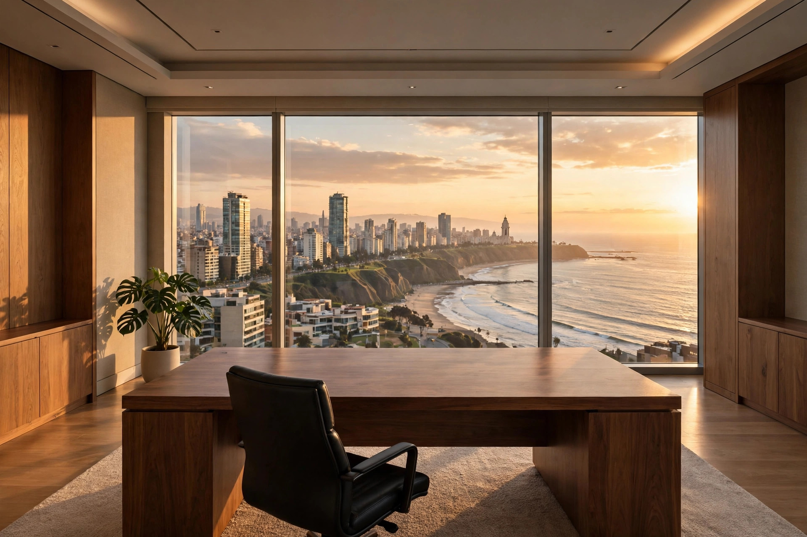
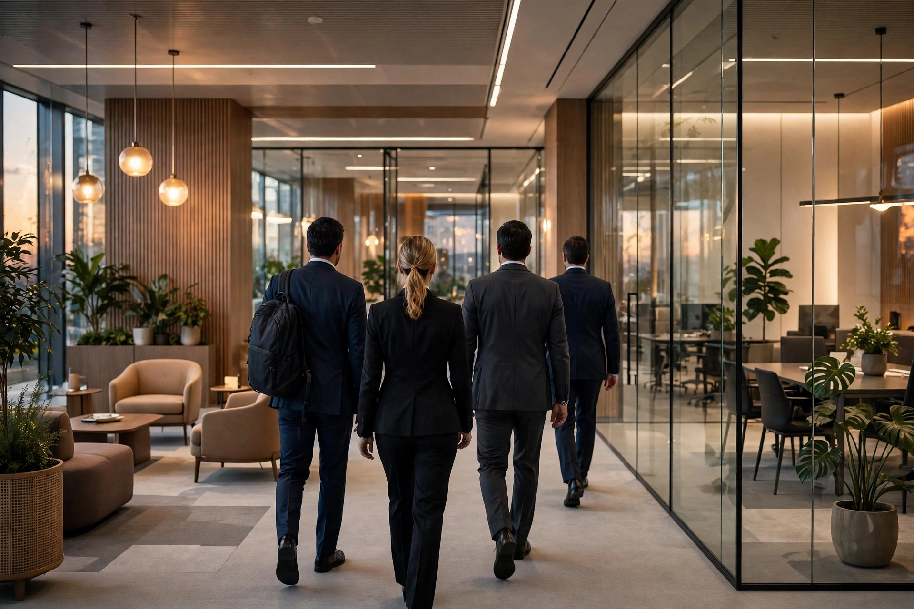
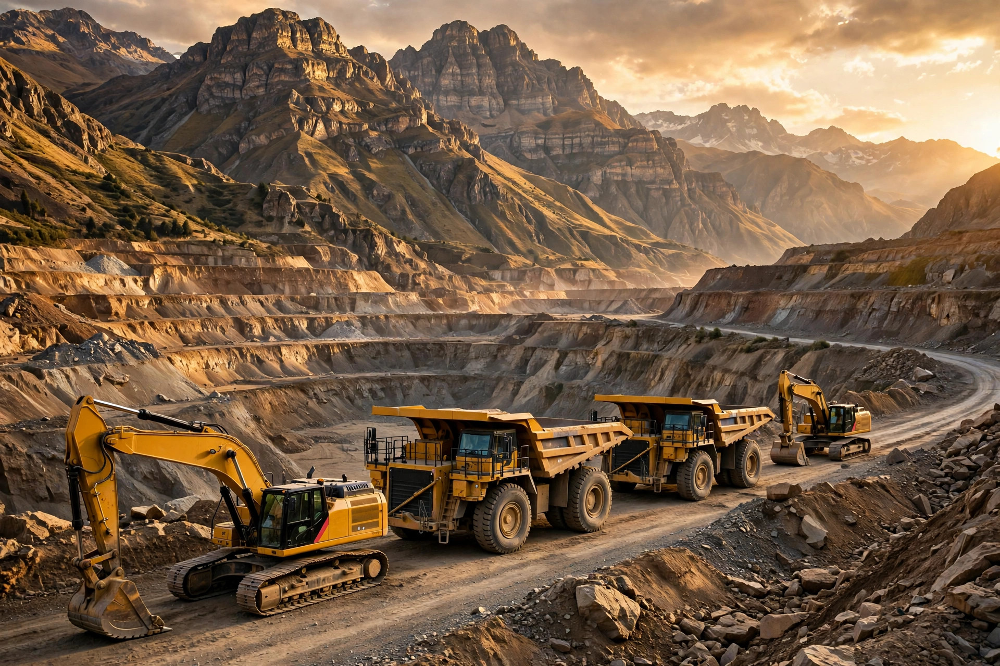
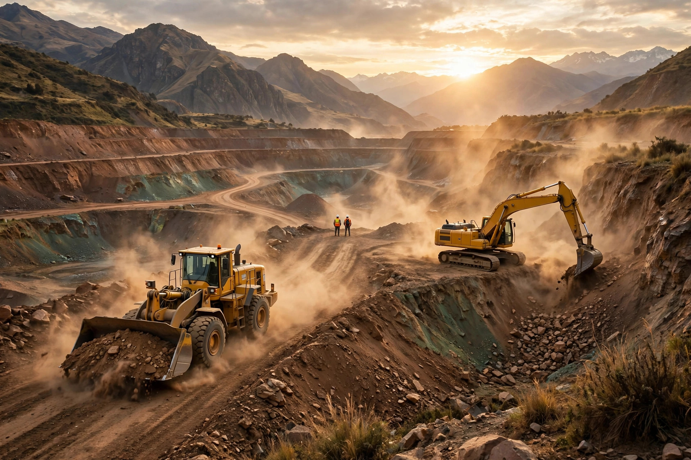

La empresa por dentro
Sin edificio 3D: los 7 puntos de la empresa van en cuadros, cada uno con su foto y su nombre. Clic en cada cuadro para entrar a su página.

Miembros · 5 de 9 independientes · 6 997 accionistas
Conocer más →
Mariela García Figari de Fabbri · desde 2008 · 9 gerencias a su cargo
Conocer más →
9 gerencias en un solo nivel · deuda neta / EBITDA 1,90
Conocer más →
Un solo grupo para todas las subsidiarias
Conocer más →
82% Perú · S/ 6 251 M · 8% exterior · S/ 639 M
Conocer más →
9% de las ventas · S/ 699 M · la pata débil del grupo
Conocer más →
>40 sucursales · 2 CRC · 15 talleres · ~1 700 técnicos · >6 500 máquinas
Conocer más →Toca un punto y lee tal cual, como si estuvieras exponiendo. Los 8 números: 102 años · S/ 7 590 M · 7 978 · 10 países · 77 % CAT · 58 % minería · EBITDA S/ 1 131 M · Utilidad S/ 489 M